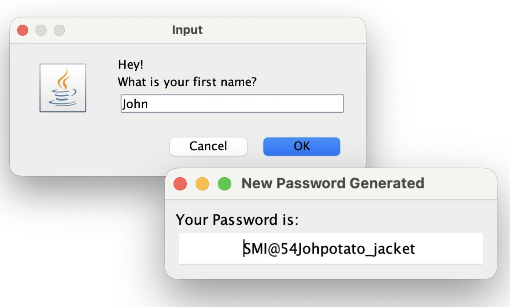
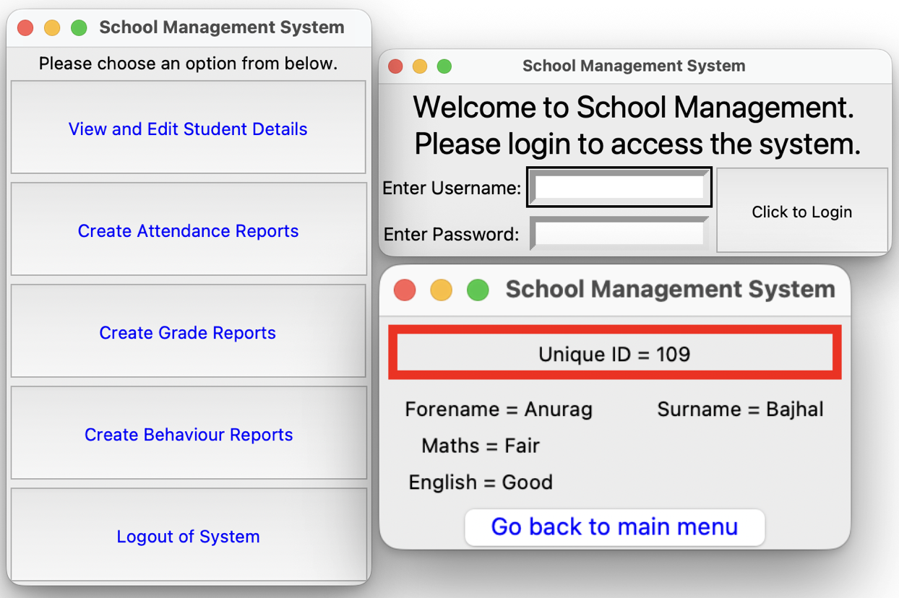

Password Wizard

A JAR Application that generates passwords based on information provided by the user. Passwords generated are of randomised order, ensuring the same password is not generated immediately again.
Built with: Java
Abilitube [ON-GOING]
An iOS app that uses API calls to display a refreshed list of what lifts are broken on the TfL network. It also contains detailed information about what facilities exist at a station and relavant statistics that people with reduced mobility or other impairments will find useful. It encourages independent travel planning, without being reliant on a Journey Planner website.
Built with: Swift, Firebase, JSON, SwiftUI
Tutor Group Management System

Part of GCSE CS. The program needs to be able to manage the students in the system and their data. It should create visual reports from the data requested by the teacher.
Built with: Python, Tkinter